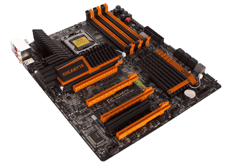
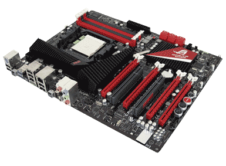
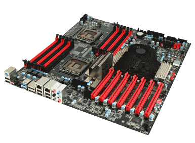

 Choosing the right motherboard when building a new PC or replacing a damaged one can be a daunting task if you don't understand the tech specs.
I will give a brief break down of what you need to know to choose the correct motherboard for your situation.
In situation one you have to choose a motherboard for building a new PC.
The first thing you will need to know is how much you want to spend.
Motherboards can range from 50 to 400 dollars depending on what you are looking to get from it.
The next thing you need to know is what type of CPU you plan to use.
There are two main CPU manufacturers that are of any relevance when choosing a CPU and depending on which manufacturer your CPU is made by and what model CPU it is that will tell you what type of socket the CPU goes into that must be present on your motherboard in order for your board to be compatible with the CPU you have selected.
Once you have narrowed your motherboard selections buy knowing the maximum amount you want to spend and the make and model of your CPU then you can dig a bit deeper and refine your selections a bit further by deciding which options your motherboard needs to have, which options you would like it to have, what form factor of motherboard will fit in the computer case you have selected and further refine that by eliminating options from unproven off brand manufacturers.
By systematically refining your selection options you can reduce your number of options and your choices will start to come into focus and you will be left with only a handful of motherboards to choose from.
 In situation two you have a damaged motherboard and need to replace it.
The obvious and easy way to handle this is to try to get the exact same brand and model of motherboard but far to often this is not an option so you will need to find a motherboard that will have very similar specs, all the same socket types and will take the same type of ram modules.
How can you figure that out if your motherboard is fried and you can't get into the hardware specs in your operating system?
First you need to answer a question.
A Dell, HP, Compac, Emachine or one of the other countless un box, plug in and use PCs from a major manufacturer?
If the answer is yes then you may have a hard time replacing your motherboard, your CPU, your power supply or your case because these vendors tend to use proprietary parts.
This means that if you need a new motherboard for your Dell Dimensions PC you bought you might only be able to get a new motherboard thru the dell company itself.
If this is the case then you will need to call them to either purchase a replacement part for you to install yourself or send the unit in to their repair center to have it fixed.
However if you do not have a major branded pre built PC replacing that damaged motherboard should just be a simple matter of retrieving the model number of the motherboard and looking up the specs for it on a search engine to pull up the technical details.
The model number of your motherboard will be stamped on the circuit board somewhere not all manufacturers put them in the same place so just look around and find it.
Write that model number down and also write down the brand of the motherboard to make your searching easier.
 Once you have searched and found the specs for your motherboard you will need to make a note of several things to compare against the new motherboard to make certain you can use the same ram, CPU, case and power supply these are.
The socket type, The form factor of the board, the type of memory module that the board excepts, the number of pins on both the ATX power port and the 4 6 or 8 pin Auxiliary power port, all modern motherboards will have either a 4pin a 6pin or an 8pin auxiliary power which varies by manufacturer and board model if you choose a new motherboard that does not have the same number of pins on these power ports you can still make it work but it will require a port adapter or a new power supply which has the correct number of pins.
At this point with the information in hand about your damaged board and its specs you can now search for a new motherboard by filtering your options one by one until you are only left with a handful of choices at which point it is just a matter of preference but I strongly suggest that you search for reviews and previous purchaser complaints to be sure there is not some widely know issue with your motherboard you have chosen.
The very best thing you can do to insure that all of your PC builds and PC repairs go as smooth as you hope they will is do your research.
Then do more research don't just except the first source of any information at face value unless it is directly from the manufacturers web site.
| Type of Motherboard to Use for Your Project | |||||
|---|---|---|---|---|---|
| Form Factor | Gaming | Media Center | Work Station | Power PC | Server |
| Mini-ITX | No | Yes | Yes | No | No |
| Micro-ATX | Yes | Yes | Yes | No | No |
| ATX | Yes | Yes | Yes | Yes | Yes |
| Extended-ATX | Yes | No | No | Yes | Yes |